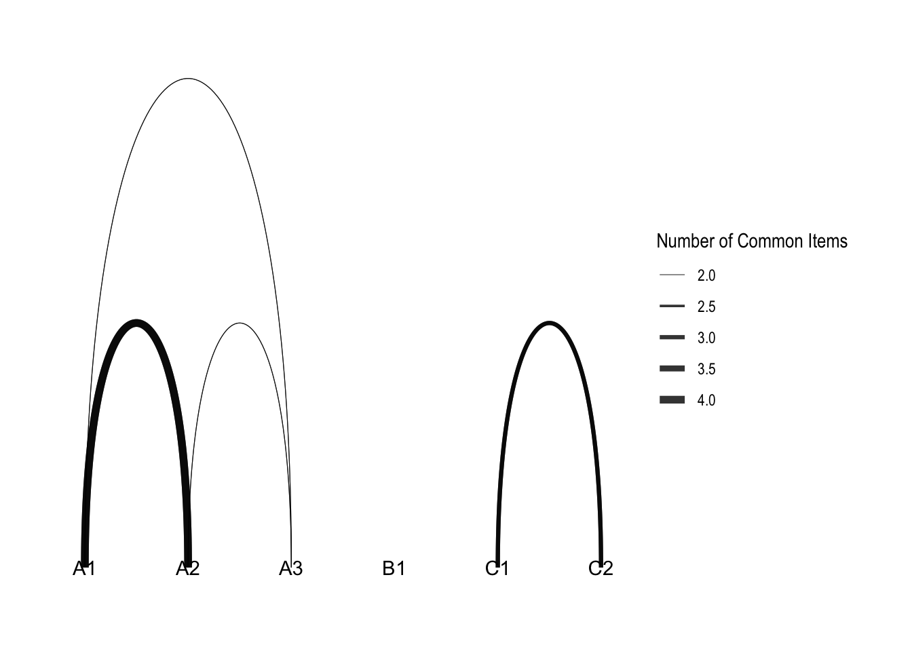

Introduction to Latent Attribute Network Analysis
Network analysis is a very useful tool. This post show how to visualize the latent attribute network in Diagnostic Classification Modeling(DCM). There are a ton of R package could be used to visualize network structure.
Data Preparation
I will use a simulated hierachial data from CDM package. The node.list depicts the traget nodes and starting nodes. Those information could be extracted from the Q^{T}Q square matrix, in which Q is the Q matrix of the model.
As shown below, there are 6 latent attributes including A1, A2, A3, B1, C1, C2. The A attributes share common items and the C attributes share common items but B attribute does not share common items with other attributes. The numbers in each cell represents the number of items shared by the pair of attributes. The number of common items will be used for the weights of network edges.
A1 A2 A3 B1 C1 C2
A1 6 4 2 0 0 0
A2 4 4 2 0 0 0
A3 2 2 2 0 0 0
B1 0 0 0 3 0 0
C1 0 0 0 0 6 3
C2 0 0 0 0 3 3
Network package

igraph package

tidygraph and ggraph
ggraph(routes_tidy, layout = "graphopt") +
geom_node_point() +
geom_edge_link(aes(width = weight), alpha = 0.8) +
scale_edge_width(range = c(0.2, 2)) +
geom_node_text(aes(label = label), repel = TRUE) +
labs(edge_width = "Number of Common Items") +
theme_graph()
### Linear Layout
ggraph(routes_tidy, layout = "linear") +
geom_edge_arc(aes(width = weight), alpha = 0.8) +
scale_edge_width(range = c(0.2, 2)) +
geom_node_text(aes(label = label)) +
labs(edge_width = "Number of Common Items") +
theme_graph()